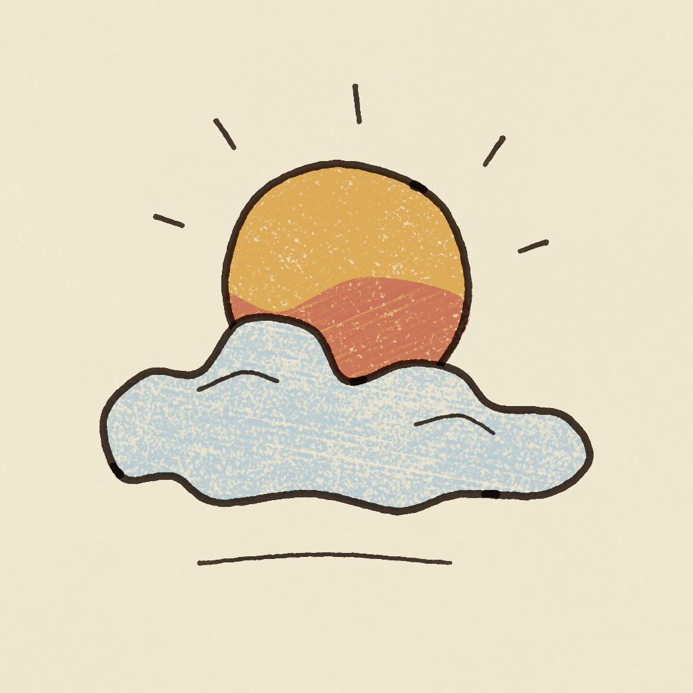
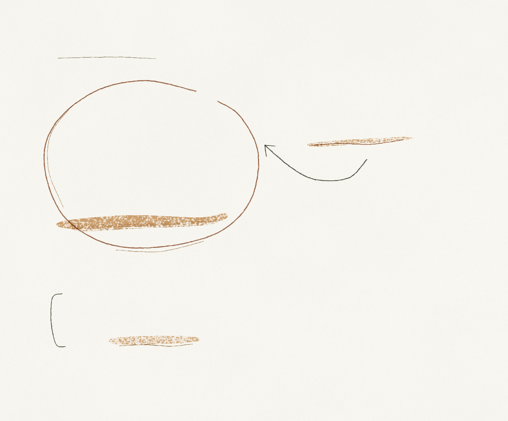

看云层、光路与空气，再决定要不要出发。
记录留在本机；查询向第三方发送城市关键词或坐标。
连接气象数据…
首次读取
下一次可见时段
当前实况 · —

晨昏观测手记
—
分项按原始值计分，显示保留一位小数；封顶规则优先。缺测项沿用模型默认值计分，不代表实测为零。
时刻为日落时间 · 第 5–7 日仅供参考向左翻看 →
暂无可用预测，请稍后重试。
地点与收藏
输入城市或省市全称 · 至少 2 个字
已珍藏 0 / 8 处 · 星标只改收藏
暂无收藏。点星标珍藏当前地点，点地名才会切换天空。
月相示意 · 非天空位置
夜巡 / 观象札记
此刻月相